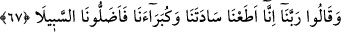
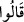
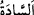
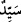
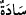
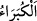
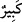
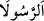
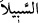
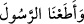
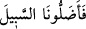
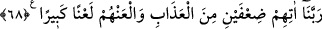
azaba mübtelâ olmasaydık “derler.”
67. Ey Rabbimiz! Biz reislerimize ve büyüklerimize uyduk da onlar bizi yoldan
saptırdılar, derler.
Tâbi olanlar “Ey Rabbimiz! Biz reislerimize ve büyüklerimize uyduk da” Onlar bu
sözleriyle önderlerinin ve liderlerinin kendilerine inkârı telkin ettiklerini kasdederler.
“Onlar” bize küfrü ve şirki süsleyerek “bizi yoldan” İslâm ve tevhid yolundan
“saptırdılar” bizim yolumuzu kaybettirdiler. Yâni bizi yoldan çıkardılar ve büyü ve
efsane ile aldattılar “derler.”
Mâzî siygasına (__WORD__) geçilmesi, onların bu sözlerinin önceki sözleri gibi devamlı
olmadığını hissettirmek içindir. Bilakis bu söz onların bir tür özür beyânıdır. Onlar -her
ne kadar cehennemden kurtulmaları konusunda isteklerinin kabul edilmeyeceğini
bilseler de- bu özür beyanı ile kendilerini bu tehlikeye atan kimselere azâbın katlanması
sûretiyle bir tür intikam almak istediler.
Onları “reis” ve “büyük” ünvânıyla ifâde etmeleri, özür beyanlarını takviye içindir.
Aksi halde onlar tahkîr ve aşağılama makamındadırlar.
“__WORD__ kelimesi “__WORD__in çoğulu, “__WORD__ kelimesinin ise çoğulunun çoğuludur (cem‘u’l-
cem‘). Çokluğa delâlet etmesi için âyette “__WORD__ diye de okunmuştur. el-Vasît’ta şöyle
der: “__WORD__ kelimesi daha güzeldir. Çünkü Araplar “__WORD__ kelimesini neredeyse hiç
söylemezler. “__WORD__ kelimesi, küçüğün mukabili olan “__WORD__in çoğuludur. Burada
kastedilen rütbe ve hal olarak büyüktür.
“__WORD__ ve “__WORD__ kelimelerinin sonlarındaki zâid elif, sesin serbest bırakılması
içindir. Çünkü sûrenin âyetlerinin sonları elif ile bitmektedir. Araplar bu elifi
hutbelerinde ve şiirlerinde korurlar. Bahru’l-ulûm’da der ki: “İbn Kesîr, Ebû Amr,
Hamza, Hafs ve Kisâî vasl hâlinde elifsiz olarak “__WORD__ ve “__WORD__ diye
okumuştur. Hamza, Ebû Amr ve Ya‘kub vakf hâlinde de elifsiz okurlar. Diğer imamlar
ise fâsılaları kafiyelere benzeterek hem vakf hem de vasl hâlinde elifle okudular. Çünkü
elifin ziyâde edilmesi, sesi salmak içindir. Bunun faydası ise orada durmak, sözün
tamam olduğuna ve ondan sonra yeni bir söze başlanacağına delâlet etmektir. Elifin vasl
ve vakf hâlinde hazf edilmesi ise kıyâs iledir.